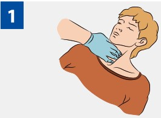
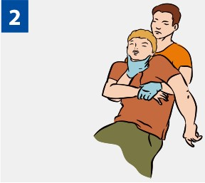

ПЕРВАЯ ПОМОЩЬ ПРИ ТРАВМЕ ШЕИ

|
Прижми сонную артерию для остановки артериального кровотечения. |

|
При подозрении на травму шейного отдела позвоночника (падение на голову, ДТП, в случае, если больной с травмой жалуется на боли в области шеи) фиксируй его руками, если необходимо перемещение пострадавшего или извлечение его из труднодоступного места. |
Источник:
http://www.culture.mchs.gov.ru/medical/algorithms_of_first_aid_in_acute_and_urgent_conditions/first_aid_in_lesions_of_the_vision/
ТЕЛЕФОН СЛУЖБЫ СПАСЕНИЯ: 112